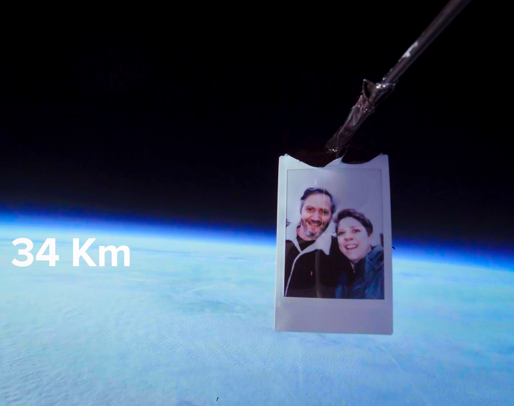
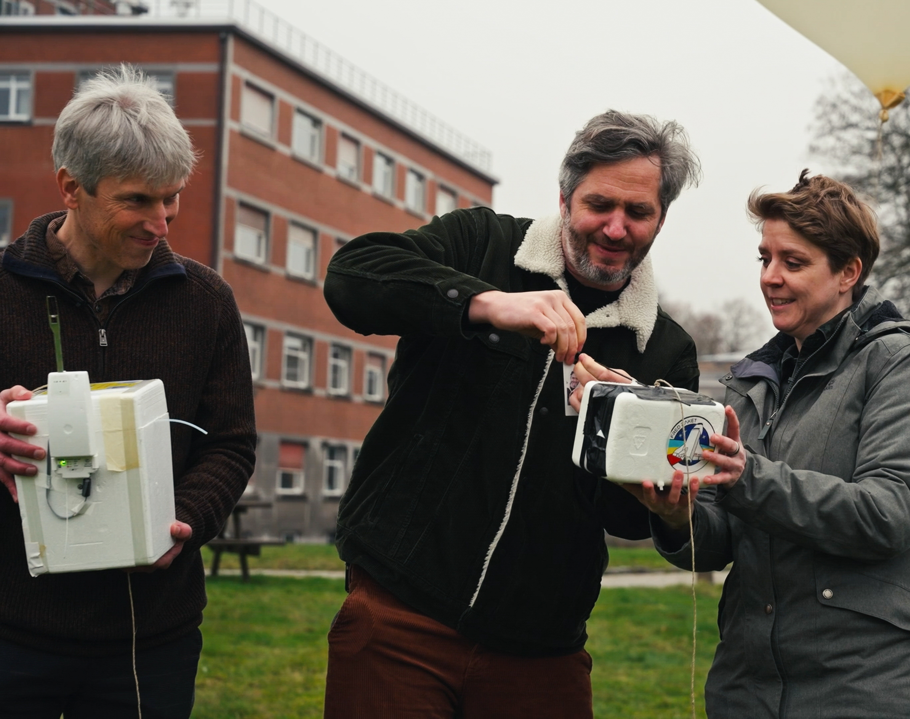
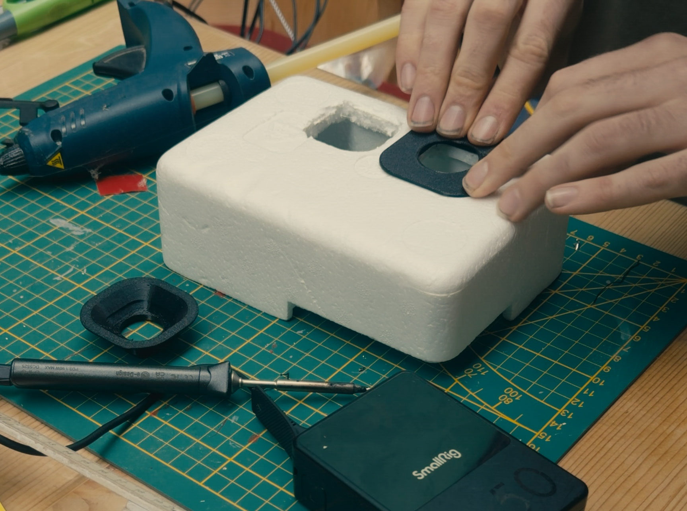
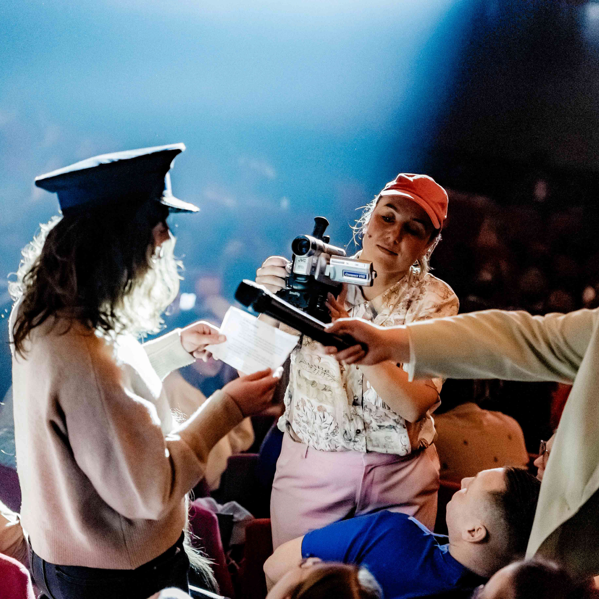
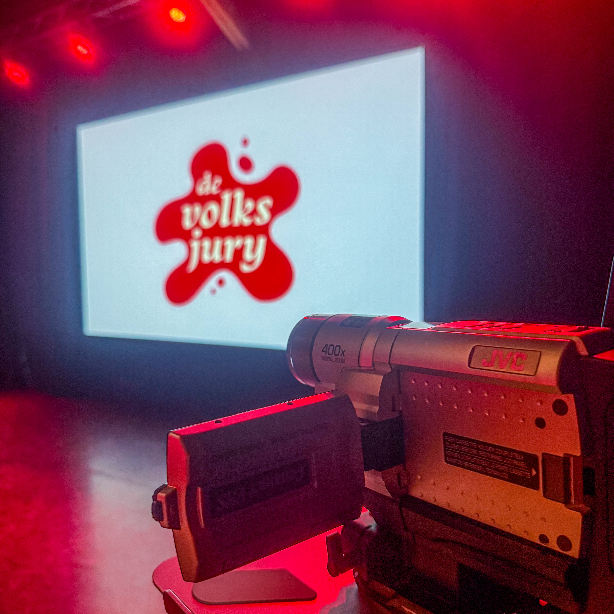
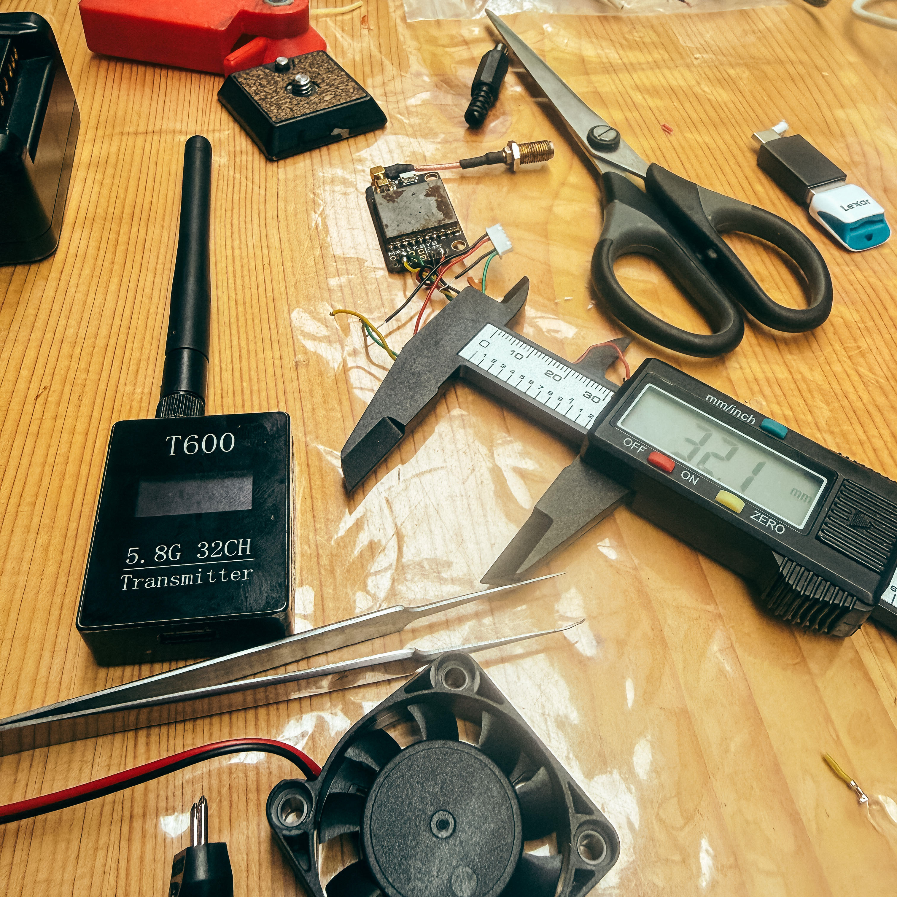

Maker
Projecten
Weerballon
Voor de zaalshow van Nerdland voor Kleine Nerds bouwde ik een camera-behuizing voor een weerballon-vlucht naar de stratospfeer. Het doel was om een Polaroid-foto van Hetty Helsmoortel en Lieven Scheire te filmen op de rand van de ruimte.
Dit was een flinke technische uitdaging: de behuizing met twee GoPro's,omdat we meevlogen met de meetapparatuur van het KMI, moesten we onder de 500 gram blijven en bestand zijn tegen temperaturen van -80 graden op 34 kilometer hoogte. Dankzij extra isolatie, verwarming en aangepaste batterijen bleven beide camera's de volledige vlucht draaien.
Samenwerking met: Krew Collective en Working Class Heroes.



Wireless VHS Camera voor De Volksjury
Voor de liveshows van De Volksjury: A Nineties Murder bouwde ik een draadloze VHS-camera in samenwerking met Krew Collective De uitdaging was om de authentieke analoge look te behouden, terwijl het signaal betrouwbaar en zonder vertraging naar de grote schermen in de zaal werd gestuurd.


